qqPlot.RdFunction qqPlot creates a QQ plot of the values in x including a line which passes through the first and third quartiles.
qqPlot(
x,
y,
confbounds = TRUE,
alpha,
main,
xlab,
ylab,
xlim,
ylim,
border = "red",
bounds.col = "black",
bounds.lty = 1,
start,
showPlot = TRUE,
axis.y.right = FALSE,
bw.theme = FALSE
)The sample for qqPlot.
Character string specifying the distribution of x. The function qqPlot supports the following character strings for y:
"beta"
"cauchy"
"chi-squared"
"exponential"
"f"
"gamma"
"geometric"
"log-normal"
"lognormal"
"logistic"
"negative binomial"
"normal"
"Poisson"
"weibull"
By default distribution is set to "normal".
Logical value indicating whether to display confidence bounds. By default, confbounds is set to TRUE.
Numeric value specifying the significance level for the confidence bounds, set to `0.05` by default.
A character string for the main title of the plot.
A character string for the x-axis label.
A character string for the y-axis label.
A numeric vector of length 2 to specify the limits of the x-axis.
A numeric vector of length 2 to specify the limits of the y-axis.
A numerical value or single character string giving the color of the interpolation line. By default, border is set to "red".
A numerical value or single character string giving the color of the confidence bounds lines. By default, bounds.col is set to "black".
A numeric or character: line type for the confidence bounds lines. This can be specified with either an integer (0-6) or a name:
0: blank
1: solid
2: dashed
3: dotted
4: dotdash
5: longdash
6: twodash
Default is `1` (solid line).
A named list giving the parameters to be fitted with initial values. Must be supplied for some distributions (see Details).
Logical value indicating whether to display the plot. By default, showPlot is set to TRUE.
Logical value indicating whether to display the y-axis on the right side. By default, axis.y.right is set to FALSE.
Logical value indicating whether to use a black-and-white theme from the ggplot2 package for the plot. By default, bw.theme is set to FALSE.
The function qqPlot returns an invisible list containing:
Sample quantiles.
Theoretical quantiles.
Intercept of the fitted line.
Slope of the fitted line.
The generated QQ plot.
Distribution fitting is performed using the FitDistr function from this package.
For the computation of the confidence bounds, the variance of the quantiles is estimated using the delta method,
which involves the estimation of the observed Fisher Information matrix as well as the gradient of the CDF of the fitted distribution.
Where possible, those values are replaced by their normal approximation.
set.seed(123)
qqPlot(rnorm(20, mean=90, sd=5), "normal",alpha=0.30)
qqPlot(rcauchy(100), "cauchy")
qqPlot(rweibull(50, shape = 1, scale = 1), "weibull")
qqPlot(rlogis(50), "logistic")
qqPlot(rlnorm(50) , "log-normal")
qqPlot(rbeta(10, 0.7, 1.5),"beta")
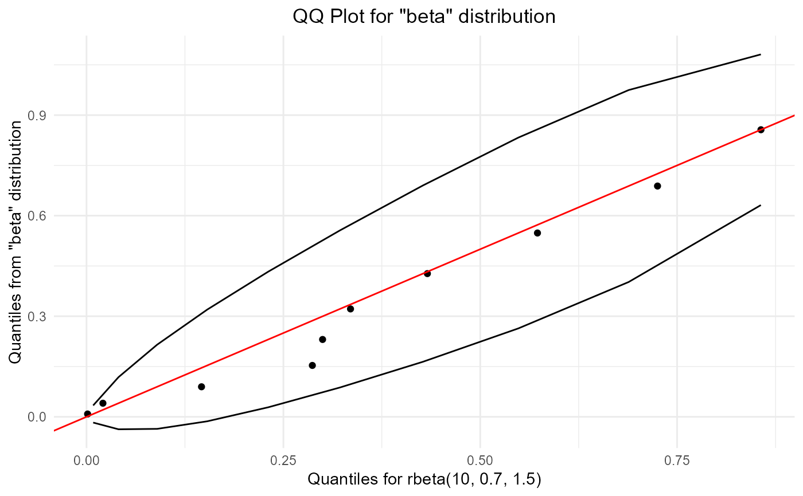
qqPlot(rpois(20,3), "poisson")
qqPlot(rchisq(20, 10),"chi-squared")
qqPlot(rgeom(20, prob = 1/4), "geometric")
qqPlot(rnbinom(n = 20, size = 3, prob = 0.2), "negative binomial")
qqPlot(rf(20, df1 = 10, df2 = 20), "f")
